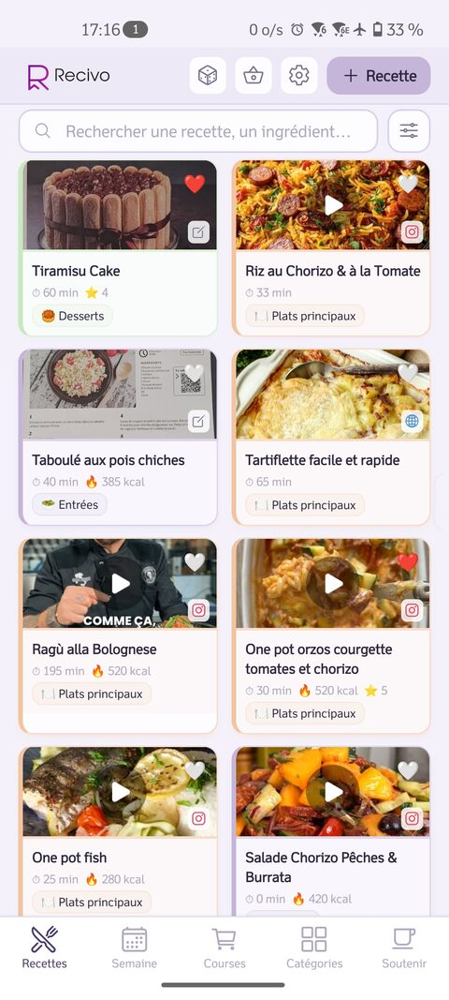
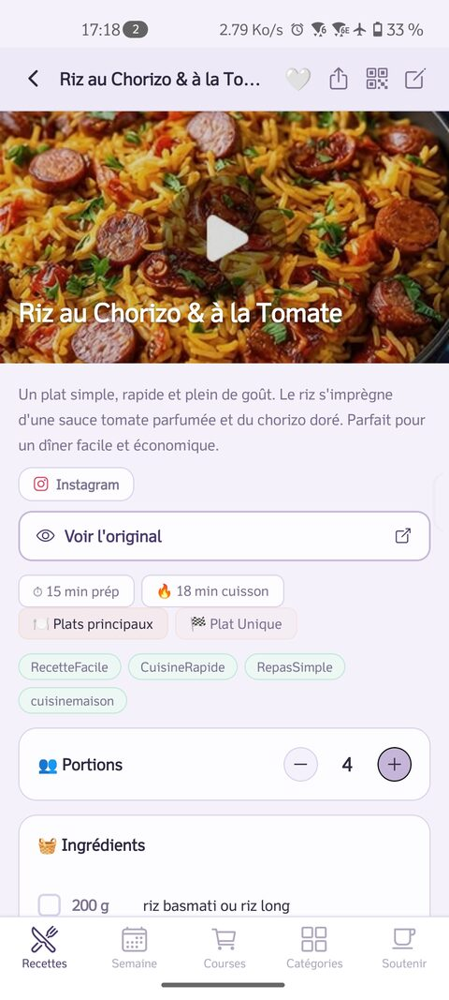
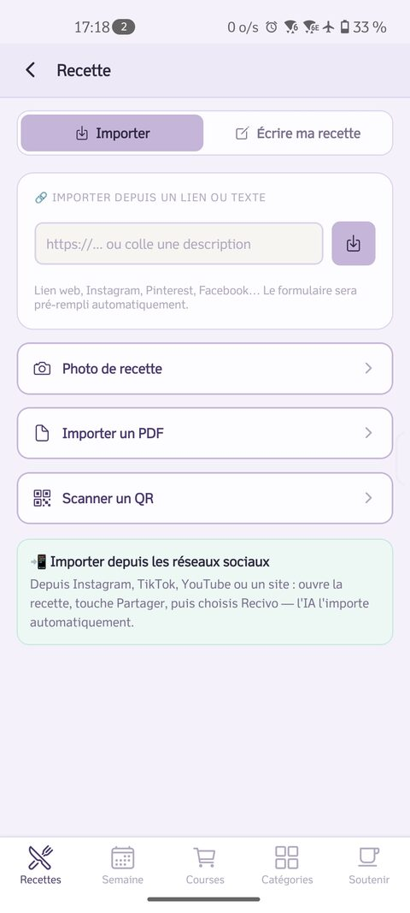
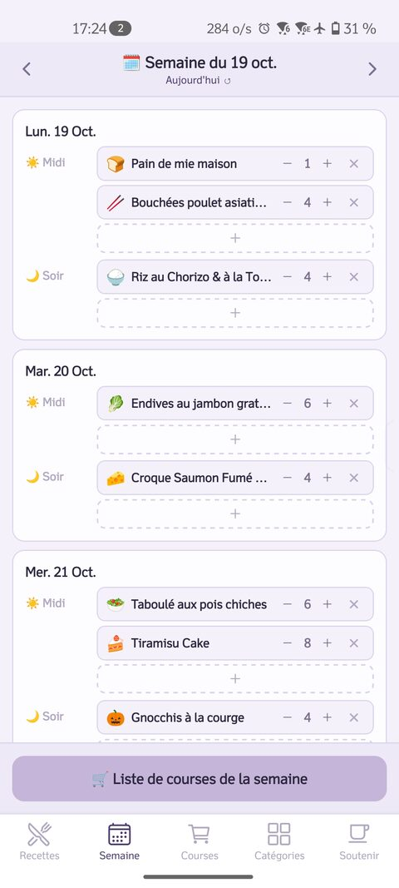
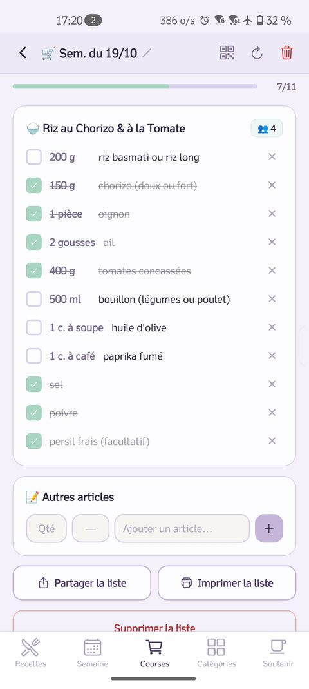
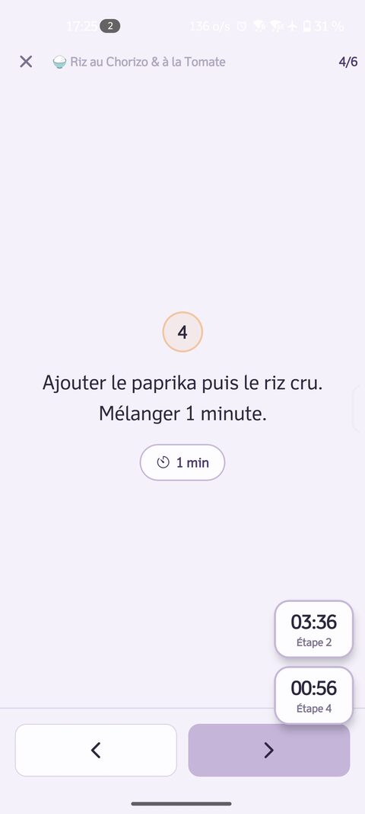
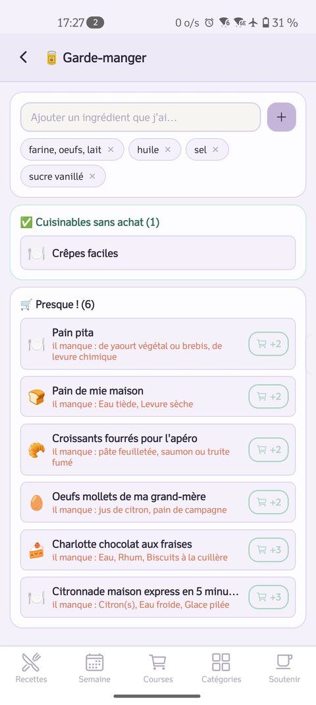
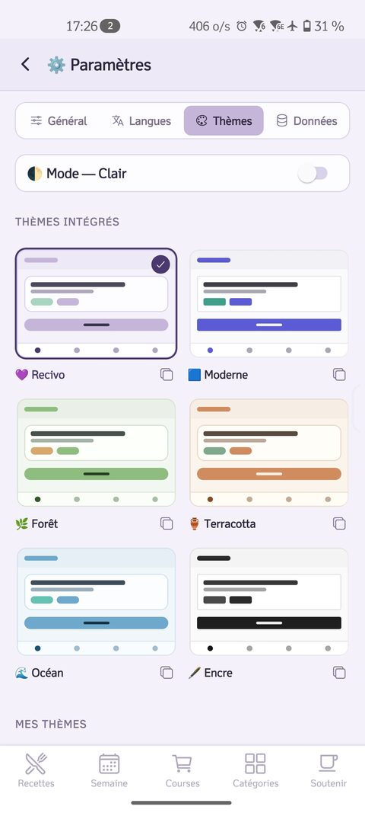

Partage un lien Instagram, photographie une page de livre ou colle un PDF : la recette arrive structurée, prête à planifier, à acheter et à cuisiner. Gratuit, sans pub, et tout reste sur ton téléphone.
Bientôt sur Google Play — la bêta fermée tourne avec un petit cercle de testeurs.








Recivo n'a ni compte, ni serveur, ni statistiques, ni publicité. Tes recettes, tes listes et ta clé d'IA (chiffrée) vivent sur ton appareil, et n'en sortent que si tu le décides — export, sauvegarde, impression ou QR code.
Lire la politique de confidentialité (deux minutes, promis).